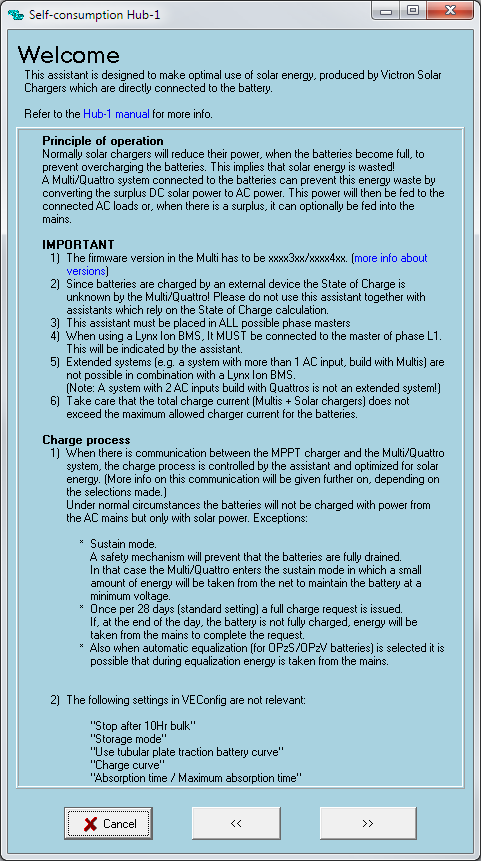
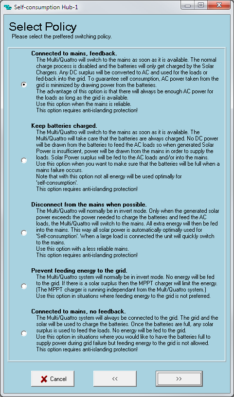

−Table of Contents
Self-consumption hub-1


When to use the hub-1 Assistant?
Use the Assistant for these systems with Solar chargers, ie. dc-coupled solar power:
- Grid that allows feed-back
- Grid that does not allow feed-back
- Grid + a backup generator
Do not use this Assistant for the following systems, even though they have solar chargers:
- No grid nor generator; solar only
- Only a generator connected to the ac-input of the Multi or Quattro, no grid.
More information:
Frequently asked questions
Do I need to connect the Multi or Quattro to the MPPT with VE.Can?
No it is not required, just much recommended. And make sure to only use it when grid-feedback is enabeld. The advantages of using the VE.Bus to VE.Can interface are:
- The MPPT will automatically use the settings from the Multi, no need to configure the MPPT.
- Equalize is managed by the Multi
- The charge states will be synchronized
- No risk that the MPPT switches to float before the Multi does, and therefore backfeeding will stop
Notes for systems where the Multi and the MPPT are not communicating (for example an MPPT 100/50 that does not have a VE.Can comm. port):
- Power can still be fed back to the grid!
- Set the absorption and float voltage of the MPPT slightly higher than the same set points in the Multi
- In a Lithium system, make sure that the MPPT can be switched off by the BMS.
More information in the VE.Can to VE.Bus interface manual.
What happens when there is to power to be fed back, but there is no grid available?
The solar charger will charge the batteries until the absorption voltage is reached, and then reduces it's output. It switches to regulation on battery voltage instead of MPPT or output current. In other words: the batteries will not be overcharged.
What happens when the battery is full and feeding back the grid is has not been enabled in the configuration?
See previous answer.
I do not have a Multi with the new microprocessor, what are my alternatives?
With older Multis and Quattros it is unfortunately not possible to feed power from DC back into the grid. It is possible to prioritize solar in a dc-coupled system.
How many MPPT 150|70 or 150|85 can be connected in parallel
A maximum of 25 units can be connected in parallel.